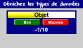
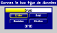

Dénicher le type de données : Trouvez parmi les choix proposés ce qui représente un type de donnée. Vous pouvez utiliser les touches "B"on et "M"auvais.
Donnez le bon type de données : Identifiez le bon type de donnée de l'expression proposée. Vous pouvez utiliser les touches "E"ntier, "R"éel, "B"ooléen et "C"haine.